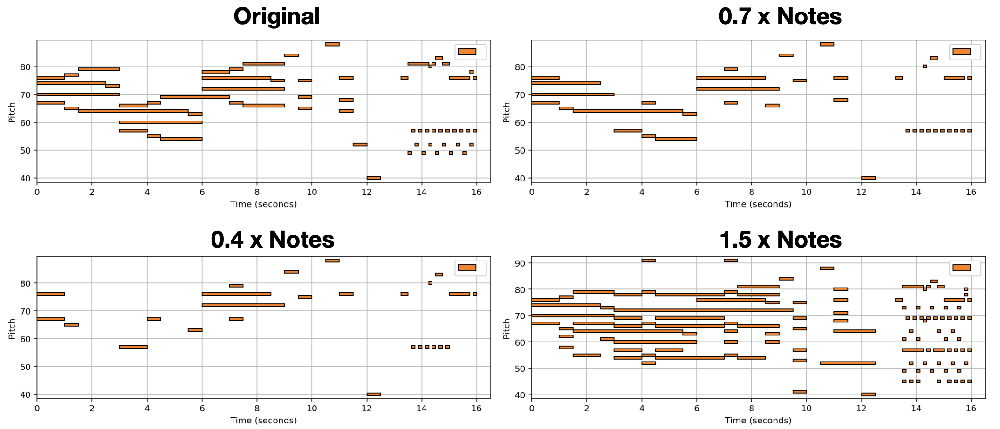

VaryCHarm: A Method to Automatically Vary the Complexity of Harmonies in Music¶
Automatically varying the number of notes in symbolic music has various applications in assisting music creators to embellish simple tunes or to reduce complex music to its core idea. In this paper, we formulate the problem of varying music complexity, and propose a method that can preserve harmonic structure while varying the number of notes. Our method, VaryCharm, adopts an autoencoder architecture in combination with a masking mechanism to control the number of notes of the generated music.
Sample Usage¶
import IPython.display
import libfmp.c1
ratio = 1.5
example = #
original = example.to(device)
output = varycharm.batch_Harmonytransformation(original, ratio, res=50)
original_roll = original[1][0].detach().cpu()
piano_roll = output[1][0].detach().cpu()
print("original_roll note_count: ", float(_note_count(original_roll)))
print("original_roll pitch_diversity: ", float(pitch_diversity(original_roll)))
pm = play_and_write(original_roll , name="ORIGINAL")
visualize(pm)
print("piano_roll note_count: ", float(_note_count(piano_roll)))
print("piano_roll pitch_diversity: ", float(pitch_diversity(piano_roll)))
pm = play_and_write(piano_roll , name="r1.5")
visualize(pm)